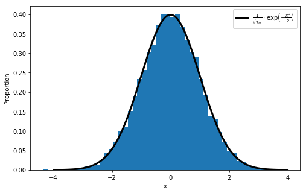

import numpy as np
np.__version__'1.16.2'Auteur: Joseph Salmon joseph.salmon@umontpellier.fr
# un vecteur: l'argument de la fonction est une liste Python
liste = [1, 3, 2, 4]
vecteur = np.array(liste)
print(vecteur)[1 3 2 4]# une matrice: l'argument est une liste emboitée
matrice = np.array([[1, 2], [3, 4]])
print(matrice)
print(matrice[0,0])
print(matrice[0,1])[[1 2]
[3 4]]
1
2[[[ 1 2]
[ 3 4]]
[[21 21]
[23 34]]]linspace:
array([0. , 0.5, 1. , 1.5, 2. , 2.5, 3. , 3.5, 4. , 4.5, 5. ])logspace:
array([1.00e+00, 1.67e+01, 2.78e+02, 4.64e+03, 7.74e+04, 1.29e+06,
2.15e+07, 3.59e+08, 5.99e+09, 1.00e+11])array([1.00e+00, 1.67e+01, 2.78e+02, 4.64e+03, 7.74e+04, 1.29e+06,
2.15e+07, 3.59e+08, 5.99e+09, 1.00e+11])diag : première utilisation
array([[0, 0, 0, 0],
[1, 0, 0, 0],
[0, 2, 0, 0],
[0, 0, 3, 0]])diag : seconde utilisation
zeros
print(np.zeros((3, 2), dtype=float))
print(np.zeros((1, 3), dtype=float))
print(np.zeros((3, 1), dtype=float))[[0. 0.]
[0. 0.]
[0. 0.]]
[[0. 0. 0.]]
[[0.]
[0.]
[0.]]ones
full
array([[3.14, 3.14, 3.14, 3.14, 3.14],
[3.14, 3.14, 3.14, 3.14, 3.14],
[3.14, 3.14, 3.14, 3.14, 3.14]])eye
mean (en français ‘moyenne’)
sum (en français ‘somme’)
cumsum (en français ‘sommes cumulées’)
Note: il existe la même chose avec prod et cumprod pour le produit au lieu de l’addition.
Comme pour les string que l’on a déjà vu, le slicing est disponible pour les arrays, avec en plus la possibilité d’y avoir accès pour chaque dimension:
Il est aussi utile de travailler avec des masques:
array([[0.74, 0.81, 0.52, 0.39, 0.78],
[0.25, 0.09, 0.93, 0.5 , 0.4 ],
[0.5 , 0.14, 0.93, 0.08, 0.73],
[0.83, 0.87, 0.72, 0.74, 0.16],
[0.37, 0.72, 0.31, 0.91, 0.29]])array([0.88, 0.1 , 0.91, 0.31, 0.45])from scipy.stats import norm # module loi normale
a = np.random.randn(10000)
x = np.linspace(-4, 4, 100)
# Affichage d'un histogramme normalisé avec matplotlib
fig = plt.figure(figsize=(8, 5))
hitogramme = plt.hist(a, bins=50, density=True)
# Oublier les détails matplotlib et Latex dans un premier temps
plt.plot(x, norm.pdf(x), linewidth=3, color='black',
label=r"$\frac{1}{\sqrt{2\pi}} \cdot \exp\left(-\frac{x^2}{2}\right)$")
plt.xlabel("x")
plt.ylabel("Proportion")
plt.legend()
plt.show()
saving = False
if saving is True:
fig.savefig("../prebuiltimages/gaussian.pdf")
'/home/jo/Documents/Mes_cours/Montpellier/HLMA310/Poly/codes'url = "http://josephsalmon.eu/enseignement/datasets/data_test.csv"
path_target = "./data_set.csv"
download(url, path_target, replace=False)file_sizes: 100%|████████████████████████████| 30.0/30.0 [00:00<00:00, 16.2kB/s]Downloading data from http://josephsalmon.eu/enseignement/datasets/data_test.csv (30 bytes)
Successfully downloaded file to ./data_set.csv'./data_set.csv'1,2,3,4,5
6,7,8,9,10
1,3,3,4,61,2,3,4,5
6,7,8,9,10
1,3,3,4,6Note: d’autres fonctions unix sont disponibles en plus de pwd et cat: - cd : pour changer de dossier (* change directory* en anglais) - cp : pour copy des fichiers (* copy* en anglais) - ls : pour lister les fichiers à l’endroit courant (* list* en anglais) - man : pour avoir accès au manuel/aide (* manual* en anglais) - mkdir : pour créer un dossier (* make directory* en anglais) - mv : pour déplacer un fichier (* move* en anglais) - rm : pour supprimer un fichier (* remove* en anglais) - rmdir : pour supprimer un dossier (* remove directory* en anglais) - etc.
1.000000000000000000e+00 2.000000000000000000e+00 3.000000000000000000e+00 4.000000000000000000e+00 5.000000000000000000e+00
6.000000000000000000e+00 7.000000000000000000e+00 8.000000000000000000e+00 9.000000000000000000e+00 1.000000000000000000e+01
1.000000000000000000e+00 3.000000000000000000e+00 3.000000000000000000e+00 4.000000000000000000e+00 6.000000000000000000e+00Le format le plus courant pour sauvegarder un array est le format ‘npy’:
Pour charger un tel fichier il suffit alors de faire:
Note: la fonction rm vient de l’anglais remove (en français ‘supprimer’)
Pour des raisons de performance Python ne copie pas automatiquement les objets (par exemple passage par référence des paramètres de fonctions).
Changer B va maintenant affecter A
Pour éviter ce comportement, on peut demander une copie profonde (deep copy en anglais) de A dans B: